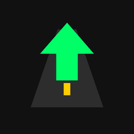

Copiloto PTYTu copiloto de voz para llegar sin estrés
Deja "Desde" vacío para salir de donde estás, o escribe otro lugar para planear el viaje.
Rutas armadas a mano en el editor, con tus propios puntos, carriles y destinos.
SentidoToca una maniobra de la lista para verla de cerca. Usa ＋/－ o pellizca para acercar.
📶 Una vez calculada, la ruta funciona sin señal: avisos de voz, flecha y carriles. Para buscar lugares y calcular rutas hace falta internet.
Configura todo antes de salir. Con el carro en movimiento los controles se bloquean. Los avisos son una ayuda: manda siempre lo que ves en la vía y la señalización.
Cada destino puede tener su propia instrucción en divisiones y rotondas.
Sin trazado, la app usa líneas rectas entre puntos. Trázalo por carretera o grábalo manejando de acompañante (lo más exacto).
Datos © colaboradores de OpenStreetMap (ODbL). Los mapean voluntarios: puede faltar alguna rotonda o salida. Verifica en la vía.
Arrastra los marcadores para corregir su posición. Con un punto abierto, toca el mapa para moverlo ahí.